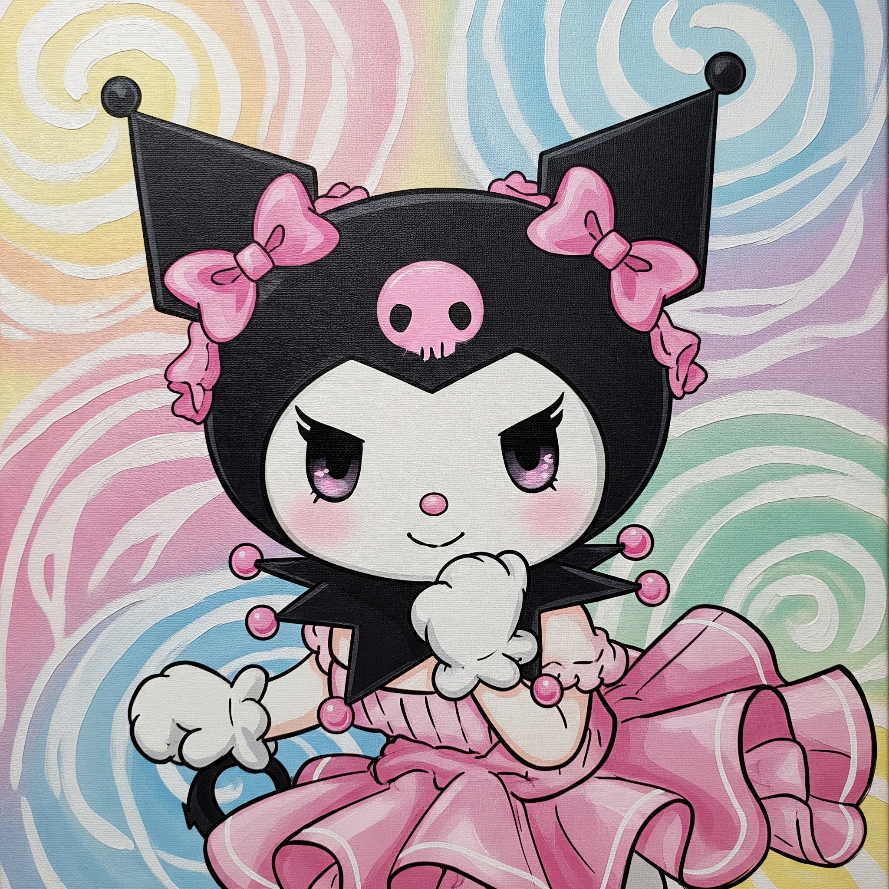
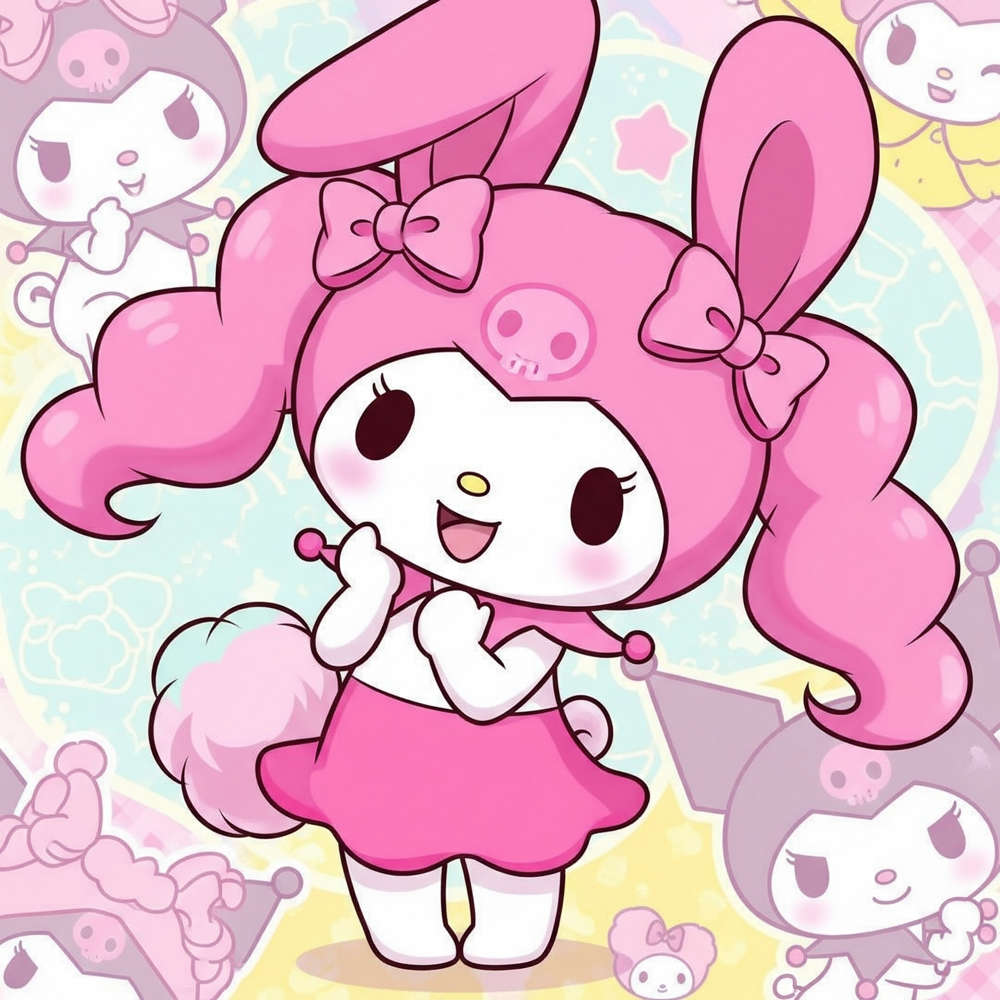
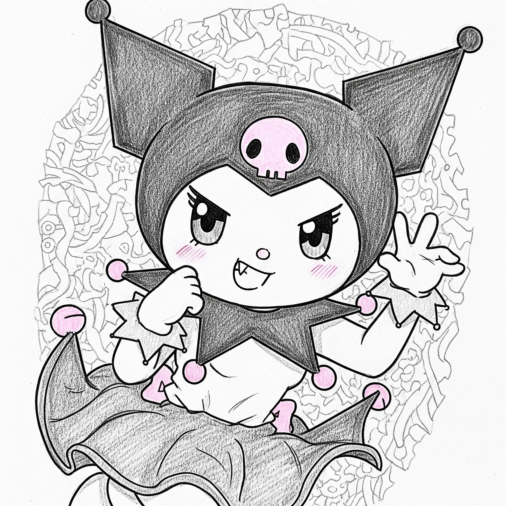
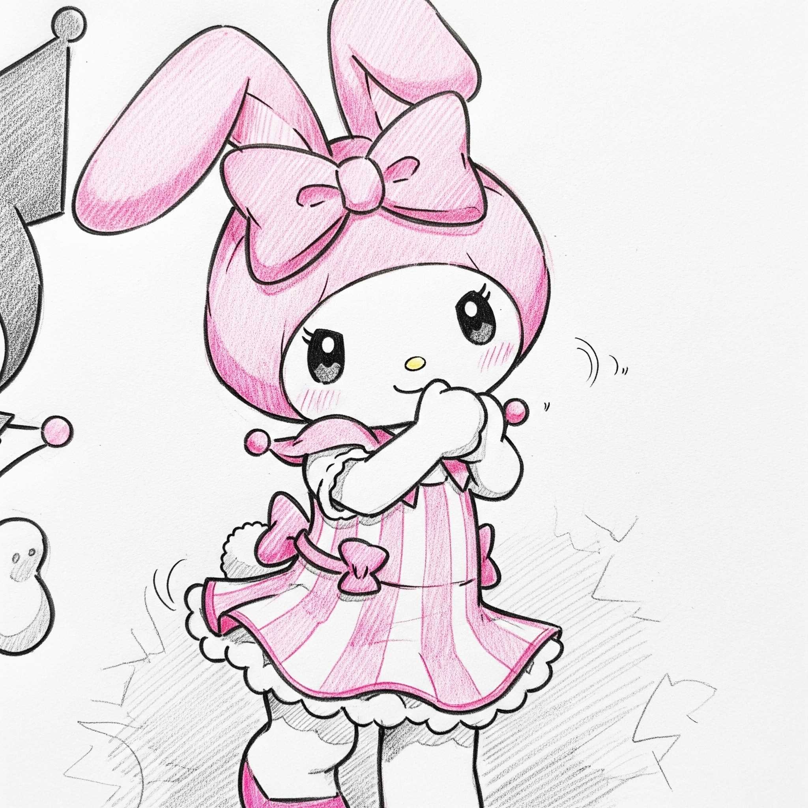

Bun venit în lumea Kuromi și Melody!
Descoperă cele mai drăguțe poze cu cele două personaje adorabile din Sanrio.
Galerie Foto




Despre Noi
Acest site este dedicat fanilor Kuromi și My Melody, două dintre cele mai iubite personaje Sanrio.
Kuromi este un iepure negru cu un aer răutăcios dar adorabil, iar My Melody este un iepure alb dulce și prietenos.